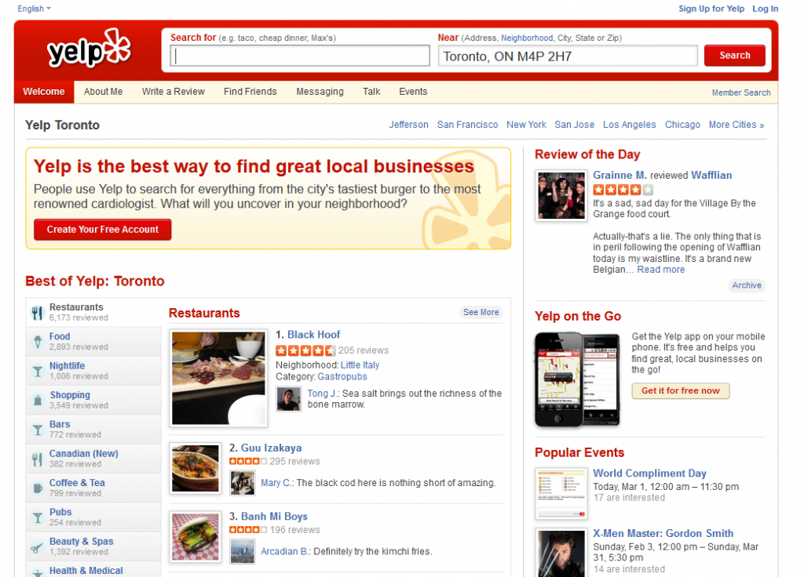

In the valley of the giants: 10 search services to use instead of Google
Group 3 INFO 320 Autumn Quarter 2014
1. Yelp.com
This website is a crowd-sourced local business review and social networking site. At yelp.com, whenever you input an address or use location service to drop pins, it will help people find the most comprehensive list of local business information and user posted reviews about those store. In a specialty search service perspective, people use yelp to find restaurants around any location, and reviews help users know the cuisine type of restaurants, spending level, popularity, location and other services. Yelp performs as a search engine of local business.
2. Linkedin.com
This website is a user profile networking site, helping people build professional connections and find jobs. For corporate owners, it allows them to post jobs and positions, and use the search function to find the best candidates. In a specialty search service perspective, it provides search services including people’s profile, corporate introductions, jobs listins, and availble positions.

3. Autotrader.com
This website is online car trading platform, helping consumers buy cars, sell cars, or research car purchases. For those looking to buy a car, the site offers lists of new and used vehicles for sale from dealers and private sellers. In a specialty search service perspective, Autotrader.com provide car trading information including car brands, prices, mileage, conditions, colors, and trading areas.
4. Panabee.com
Panabee.com is a business and domain search service for users looking to set up a website. By typing in two words Panabee will generate a list of domain name ideas, give users information about whether or not the domain is currently owned, and provide a link to a site to purchase the domain. Panabee also offers filters for different domain extensions and a list of similar words to help businesses decide on a final name.

5. Worldcat.org
Worldcat.org is an online library catalog of over 10,000 libraries worldwide. The website catalogs and is searchable by books, videos, articles, and CDs. In the advanced search features users are able to search with more context including year, format, language, content, and keywords. This website is primarily for students or those working within academic fields looking for research resources. Worldcat returns a list of local libraries that have the desired item.

6. Archive.org
Archive.org has a search feature called the Wayback Machine, which allows users to view archived web pages and navigate past versions of websites. The user searches a URL and is then provided with a list of possible dates from which to view the site. This can be both a useful tool to understand the history of the web’s devlopment and a means to find information and web pages that no longer exist.

7. Vimeo.com
Looking for cool videos to watch online? Try Vimeo.com! This site allows people to create an account and share or watch videos of different varieties. There are several different accounts you can sign up for, including a free one with basic services. However, there are other ‘plus’ accounts that allow people to watch HD videos with no ads, at a price of course. Regardless of what you are looking for, Vimeo is a great site to enjoy some videos! This site is better than others because it is password protected which protects people from stealing uploads from other users. You can also set the privacy settings so that only a set audience can see your content.
8. Goodrx.com
Tired of paying so much for prescription medication? Try Goodrx.com! This site lets people look up medications by name or brand and by city or zip code and displays a list of pharmacies that has that medication by price, from cheapest to most expensive. This specialty search site is great for anyone, even people with good insurance coverage, since it can double as a regular medication locator. In any case, this site helps people for their medical needs. This site should be used over other similar sites because of its simplicity, and the last thing you need to worry about when looking for medication is figuring out the complexity of another site.
9. Tripadvisor.com
Looking for hotels or flights for your next vacation? Its likely tripadvisor.com is your first stop. Tripadvisor is a site offering hotel, flight, and vacation rental information. The distinguishing feature of this service is its wide implementation of user reviews. Users can post reviews, and the businesses can reply, all for free. For flights, tripadvisor queries other services, such as Expedia, or WebJet and compares the ticket prices. The site does the same for hotels and vacation rentals, listing the venues by their price and rating. This site is useful for anyone looking for reviews and opinions about possible travel destinations and venues.
10. Facebook.com
While not typically associated with “search”, Facebook has become a search service of its own. This particular feature does not even require an account. Facebook enables users to search people they know or might be interested in. The search is personalized by the user’s location, peers, and even browsing history. For example, when searching for the Beatles, Facebook not only displays the respective group’s page, but also references to their name in popular pages. This search service is useful to anyone interested in knowing more about the various personalities of the world, or even their fellow neighbor.